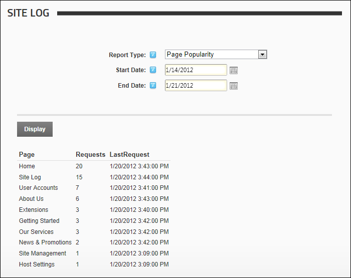

The Site Log enables users to view twelve statistical reports on site activity. Each report can be set by date range, with the previous month being the default setting. Any user who has been granted access to view this module can view reports. SuperUsers can enable the Site Log and restrict the number of days log history is kept for.

The Site Log Module
Related Topics: